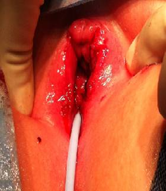

Genitourinary Trauma
David J. Chalmers, Vijaya M. Vemulakonda
→ Enlace a la versión en español

Introduction
Trauma is the leading cause of mortality in the pediatric population, largely due to motor vehicle accidents involving children. , , Injuries to the genitourinary tract are rare, but are responsible for a variety of associated complications and morbidity. The pediatric urologist is rarely the first physician to evaluate or treat the trauma patient. Instead, urologists are typically consulted by the emergency department or admitting service following a more comprehensive evaluation. The aim of this chapter is to review the most common types of injury throughout the genitourinary tract and external genitalia with a focus on key features of the initial evaluation, management and anticipated complications. Differences between adult and pediatric trauma will be highlighted.
General Evaluation
An evaluation of the trauma patient always begins with a comprehensive history and physical exam if possible. In a child with blunt or penetrating abdominal trauma, key details for the urologist include the mechanism of injury, associated multi-organ injury, the presence of hematuria, abdominal or flank tenderness, rib fractures, and contusions or abrasions. Penetrating injury to the flank, abdomen or torso is a critical detail and a likely indication for further imaging. The presence of multisystem trauma, gross hematuria or substantial microscopic hematuria are additional details that also warrant further investigation. , ,
Unlike in the adult trauma setting, blood pressure and heart rate are not sensitive indicators of shock in children. Tachycardia may be a result of anxiety or pain from the trauma and children are capable of compensating for significant blood loss through vasoconstriction and increased cardiac output. If an injured child’s blood pressure does decrease due to hypovolemia, it is a late sign of instability. For this reason, adults with blunt trauma and microhematuria without hypotension are often observed. However, since hypotension is an unreliable predictor of pediatric renal injury, all children with a history of significant blunt abdominal trauma and any degree of hematuria should undergo imaging of the urinary tract regardless of vital signs.
The physical exam should focus on abdominal and genital signs of injury. A mass or ecchymosis of the flank may represent a perinephric hematoma or urinoma. Eccymosis of the perineum in a butterfly configuration indicates blood tracking within Colles fasica. Scrotal or labial hematoma or edema can result from genital trauma or pelvic injury. Blood at the urethral meatus or urinary retention must raise suspicion for urethral injury. The presence of any of these findings warrant further evaluation in the stable patient.
Renal Trauma
Mechanisms
The kidney is the most common site of injury, resulting in approximately half of all genitourinary injuries in children. The majority (>80%) of injuries to the kidney are from blunt trauma while the remaining injuries are penetrating in nature.4 Falls, motor vehicle collisions, and pedestrian accidents constitute the overwhelming majority of childhood renal injury. Organized sports are an uncommon cause of serious injury. Notably, renal injury seldom occurs in isolation. Approximately 80% of all grades of renal injury will have other associated organ injuries. ,
It is thought that the kidney is more susceptible to blunt trauma in children compared to adults. There are a variety of explanations for this difference. The kidney is proportionately larger in children and is less protected by the ribs since it projects more inferiorly. The ribs in children are also more flexible and are unable to provide as much protection. Finally there is less retroperitoneal and peritoneal fat and less developed musculature to buffer the kidneys in children. Of note, the overall incidence of congenital renal malformations in series of blunt renal trauma is elevated, ranging from 4-23%. Horseshoe kidneys and kidneys with ureteropelvic junction obstruction, are at particularly high risk of injury even in the absence of associated organ injuries or high injury severity scores. ,
Evaluation
Hematuria is an important indicator of injury to the kidney, but represents a significant difference between adult and pediatric trauma. In adults, very few renal injuries do not have significant microscopic or gross hematuria at presentation. For this reason, a threshold of 50 red blood cells (RBC) per high-power field (HPF) in addition to shock (systolic blood pressure <90 mm Hg) is considered a reliable indication for further imaging in adult trauma. Conversely, over 50% of children sustaining renal trauma may fail to demonstrate hematuria on presentation. , , Children’s higher sympathetic tone and the less reliable correlation between hematuria and injury dictate a greater reliance on the clinical history and the presence of associated injuries. Generally agreed upon indications for radiographic workup in the pediatric trauma patient include 1) penetrating injury to the abdomen or flank, 2) blunt trauma resulting from significant deceleration such as a high-velocity motor vehicle collision or fall, 3) blunt trauma leading to other significant multi-organ injuries and 4) gross hematuria or microscopic hematuria greater than 50 RBC/hpf. Complete ureteropelvic junction disruption and renal pedicle injuries to the vessels are classic examples of significant injury that may present without hematuria. These insults are typically associated with such significant mechanisms of injury that further abdominal imaging is warranted to assess for other associated injuries. , Notably, the degree of hematuria does not correlate well with severity of renal injury.1-4
Contrast-enhanced computed tomography (CT) is the primary imaging modality used to assess injury to the urinary tract and has become the cornerstone of modern staging of blunt renal injuries. Complete imaging provides accurate staging, management and prognosis. Most adult facilities have an established renal protocol including non-contrast, contrast and delayed phases in order to evaluate the renal blood vessels, parenchyma and the entire collecting system respectively. While ultrasonography has become an indispensable modality in pediatrics due to the lack of radiation exposure, ease of use and relative low cost, it is not reliable in renal trauma situations. Ultrasonography has accurately detected only 60% of grade III renal lacerations and appears to be even less accurate in detecting low grade renal injuries. Ultrasound is accurate in monitoring perinephric fluid such as urinoma or hematoma, however. For this reason, it may be more appropriate to monitor defined injuries with ultrasound following the event rather than re-imaging with CT scan as is common following adult trauma.3, , The modality and timing of re-imaging following renal trauma is physician dependent, but generally not necessary for low grade trauma.
Grading Classification of Blunt Renal Trauma (Table 1)
The degree of renal injury is assessed by a grading scale and is a critical tool in determining appropriate management. Renal contusions or contusions are considered grade 1 injuries and are the most common injuries to the kidney constituting 80% of renal trauma. , Grade I injuries are defined by decreased uptake of contrast material or subcapsular hematoma. Previously, these injuries were not detected with older imaging technologies such as intravenous pyelogram. The advent of CT scans has dramatically increased the detail and sensitivity of detecting subtle injury.
Grade II and III renal injuries occur when the renal parenchyma tears. Tears less than 1 cm are considered grade II and greater than 1 cm are grade III. These lacerations are considered minor if they are limited to the parenchyma of the kidney and do not extend into the collecting system. These injuries will likely produce more pain and nausea than contusion and may lead to extensive perinephric hematomas, but there should not be urinary extravasation.
Severe lacerations that extend into the kidney and disrupt the collecting system are considered grade IV injuries. Bleeding can be extensive and may fill the Gerota fascia space completely. While the amount of blood may be significant, this is not necessarily an indication to intervene surgically. As the space within Gerota’s fascia fills with blood, blood loss may be contained and tamponaded by the hematoma itself. The diagnosis of urinary extravasation also indicates a grade IV injury and requires delayed imaging by CT scan for accurate diagnosis. Grade IV injury may also result from injury to the hilar vessels with contained hemorrhage. The mechanism of injury is classically rapid deceleration leading to stretching of the adventitia and muscularis. The intima of the vessel is not so elastic, however, and may tear more readily. Intimal tears expose the muscularis to rapid blood flow and can clot off the renal artery or vein. While hematuria may be absent in these situations, the mechanism of injury is typically so significant that other organ injuries are present. While the parenchyma may be intact, perfusion will be compromised and asymmetric compared to the unaffected side. ,
Wide separation of multiple renal fragments indicates a “shattered kidney” and is the most common appearance of a grade V injury. It can be difficult to determine what segments are poorly perfused due to severe contusion and what tissue may be truly devitalized. Massive bleeding and extravasation within Gerota’s fascia is common. Major hilar injury leading to devascularization also defines grade V renal injuries. The warm ischemia time inherent to this type of injury makes salvage unlikely and surgery is generally reserved for nephrectomy in order to stabilize active hemorrhage. Even under ideal circumstances, salvage rates for kidneys with renal pedicle injuries are below 30%. ,
Management
Current management of renal injuries has shifted towards a non-operative approach with up to 85% of blunt renal injuries managed nonoperatively.4 Goals of either a conservative or surgical approach should focus on preservation of renal tissue and kidney function while minimizing the morbidity and mortality of the injury to the child. Conservative management is appropriate for lower grades of renal injury (I-III) and commonly involves bed rest until hematocrit measurements have stabilized and hematuria has resolved. Monitoring of vital signs is imperative to assess hemodynamic stability. Following discharge, limited activity should be recommended for 2 to 6 weeks according to the clinician’s impression. This approach has proven to be highly successful in avoiding long-term complications such as hypertension, loss of renal function and hydronephrosis. Re-evaluation with ultrasound can reliably detect an expanding urinoma or hematoma. Patients that decline clinically or are unstable may require additional CT imaging and possible intervention such as exploration with an attempt at renal repair, placement of a ureteral stent or angiographic embolization.
The management of severe renal injury (grades IV-V) is more controversial and requires an individualized approach. A significant consideration is that surgical intervention may lead to nephrectomy rates over 85%. Patients who are hemodynamically stable with isolated high-grade renal injuries are candidates for non-operative management. Nonetheless, surgery is indicated for patients with a vascular pedicle injury or shattered kidney that place the patient at risk for life-threatening hemorrhage. Absolute indications for operative intervention also include an expanding or pulsatile retroperitoneal hematoma and the inability to stop hemorrhage by selective angioembolization. Relative indications for exploration are significant urinary extravasation, non-viable renal tissue, arterial injury and expanding hematoma or if accurate staging is non-possible. Surgical management should first focus on control of the renal pedicle and aorta. When hemostasis is achieved, inspection of the kidney and collecting system can be performed. Devitalized tissue should be debrided and any defects in the parenchyma closed and covered if possible. Partial nephrectomy to preserve viable parenchyma is the operation of choice. Urinary extravasation can be managed with a ureteral stent or nephrostomy tube. A successful outcome for emergency repair of a severe pedicle injury or thrombosis is unlikely given the amount of warm ischemia the injured kidney will undergo during the evaluation and resuscitation of the patient. Attempts at salvage in these situations should be limited to extreme circumstances such as a solitary kidney or bilateral renal injuries.
Penetrating Trauma
It is important to note that the outcomes for penetrating injury are generally less favorable than for blunt injury. , These types of injuries are typically from gunshot or stab wounds and the incidence is rising among children, particularly in inner-city adolescent boys.29 Compared to blunt trauma patients, patients with penetrating trauma are more severely injured, with a greater likelihood of requiring blood transfusionand nephrectomy . Overall, the rate of surgery for penetrating renal injury is approximately 36%4,28, in comparison to exploration rates under 10% for blunt injury.3,4,27 While stab wounds and low-velocity gunshot wounds may cause precise localized injury, high-velocity gunshot wounds are notorious for causing a blast-effect leading to difficulty in determining the true extent of injury on initial evaluation. In all cases of penetrating trauma, broad-spectrum antibiotics are recommended to avoid wound infection.
Complications
There are a variety of early and late complications associated with renal injury. The most significant early complications include bleeding, infection and urinary extravasation/urinoma. The risk of bleeding is highest immediately following the trauma and admission for close observation is necessary. Strict bed rest and serial hematocrits are the mainstay of treatment for conservative management of low grade renal injuries. This should be continued until resolution of gross hematuria and stabilization of hematocrit levels. Signs of hemodynamic instability, including hypovolemia and severe hypotension that does not respond to blood transfusion, should prompt consideration of surgical exploration or angiography with potential embolization. Primary angioembolization may reduce the morbidity associated with surgical exploration, and is useful for segmental artery bleeding or delayed hemorrhage. The risk of secondary or delayed hemorrhage is not insignificant. Classically, bleeding may recur 1-2 weeks following trauma, but can occur up to a month later. This risk may be as high as 25% of patients with grade 3-4 renal trauma who are managed conservatively.19, , , Delayed bleeding is usually due to the development of an arteriovenous malformation or pseudoaneurysm. Unlike fistula or pseudoaneurysm formation following renal biopsy, spontaneous resolution following trauma is unlikely and the need for surgical intervention is high. Angiographic embolization of an isolated renal artery is an increasingly common technique to address this complication with success rates of approximately 80%.13,19, ,
Infection must be a consideration whenever there is a hematoma, urinoma or devitalized parenchyma. Large amounts of devitalized tissue exceeding 25% of the affected kidney put patients at particularly high risk for clinically significant urine leak, hematoma and perinephric abscess. Delayed recognition of an infected hematoma, urinoma or perinephric abscess places the patient at risk for sepsis. Children should be treated with parental antibiotics initially, followed by an appropriate oral antibiotic; however abscess formation must be definitively treated by percutaneous or open drainage.
Extravasation of urine is a sign of renal pelvis laceration, a significant parenchymal tear extending into the collecting system, or avulsion of the UPJ. Complete UPJ disruption is rare, but is associated with significant deceleration injuries such as motor vehicle collisions or falls from significant heights. While spontaneous resolution of urinomas have been reported in up to 75% of children even with severe grade IV lacerations, , , complete disruption requires immediate operative repair. Serial imaging, typically by ultrasound is adequate for monitoring the size of a urinoma. Indications for a ureteral stent or percutaneous drainage of the collecting system include symptomatic and worsening extravasation. A relative indication for stenting is failure of the urinoma to resolve with conservative management. The strategy of conservative management with or without endoscopic drainage is effective in resolving >90% of urinomas.38,
The most significant late complications of renal trauma include hypertension and loss of renal function. Hypertension in children following renal injury is rare (<1-2%), but long-term monitoring of blood pressure is important to exclude the need for medical or surgical management.32, , , , The development of a fibrous capsule around the injured kidney is the likely mechanism for renin-mediated hypertension. The restricted blood flow by parenchymal compression has been termed a “Page Kidney” and is likely due to a prolonged urine leak or urinoma. Additional mechanisms for renin-mediated hypertension include stenosis of the renal artery or one of its branches or a persistent post-traumatic arteriovenous fistula. Medical management is usually successful until the underlying etiology resolves spontaneously, but the duration of this strategy is unknown and surgical intervention may ultimately be necessary. In these rare cases, options include vascular or endovascular reconstructions of arterial malformations. Rarely, capsulotomy or nephrectomy may be attempted.
Preservation of functional renal parenchyma is one of the foremost goals of renal trauma management. This may be less successful in children with renovascular trauma or with high grade injury. While conservative management of low grade trauma (grades I-III) typically leads to complete healing, Grades IV and V show some volume loss (22% and 50% respectively). 44, Surprisingly, even segments of a shattered kidney frequently retain blood supply and remain viable. Over time, these kidneys can reconstitute themselves in good alignment although they may have morphological changes that persist, including scars (Figure 1),
Figure 1: A linear scar in the left kidney persisting 3 months following a grade III injury.
cysts or segmental hydronephrosis. Nuclear medicine studies such as MAG3 or DMSA may be done in order to document or track recovery over time, although the results are unlikely to affect management. It is difficult to determine the true functional outcome soon after the traumatic event since some segments with contusions may not take up contrast during the initial CT scan. If given time to recover, these segments may eventually demonstrate function. As long as a healthy contralateral kidney exists, the risk of post-traumatic renal failure is low.44
Ureteral Injury
Mechanism
The incidence of ureteral injury is uncommon, constituting less than 3% of genitourinary trauma.45, The ureter is largely protected by its retroperitoneal location and close proximity to the vertebral column, paraspinal muscles, and the bony pelvis. It is also a small target and inherently mobile. Severe blunt injury, classically from significant deceleration, may cause disruption of the ureteropelvic junction. Penetrating injury, such as gunshot wounds or stab wounds, is more common and will be associated with other organ injury in 97% of cases. Gunshot wounds, in particular, are capable of injuring the ureter even if it is outside the path via a blast effect. Finally, iatrogenic injury is possible in laparoscopic, pelvic, or endoscopic procedures. Recognition at the time of injury is critical to minimize sequelae.
Evaluation
A high index of suspicion for ureteral injury must be maintained to avoid missing the diagnosis and the urologist must be cognizant of the risk of delayed necrosis. Hematuria may be present in only 23-45% of cases and CT scans may miss up to 75% of cases. , Delayed images are imperative to visualize contrast throughout the collecting system (Figure 2).
Figure 2: Extensive extravasation of contrast from a proximal ureteral disruption.
Intraoperative evaluation does not always identify a clear injury. If there is concern for an occult ureteral injury, identification of the ureters by passing a ureteric catheter can be helpful, particularly in a difficult dissection or reoperation. Alternatively, administration of indigo-carmine or methylene blue and endoscopic inspection of the ureteral orifices can confirm an intact collecting system.
Management
The timing and specific intervention for ureteral injury depend on factors such as the timing of diagnosis, the severity of injury and the patient’s overall condition. Repair principals are similar to that of adult ureteral injury. Early recognition of an injury, such as an intraoperative iatrogenic injury, should prompt immediate repair. Key features of an appropriate ureteral repair consist of a tension free, spatulated anastomosis. Devitalized segments should be excised to reapproximate healthy edges. Repair over a ureteral stent may prevent transient obstruction from edema or hematoma and aid the healing process. In cases where direct reanastamosis is not possible, options include further mobilization of the kidney and ureter, psoas hitch or Boari flap with or without ureteral reimplantation, and transuretero-ureterostomy. These considerations may be dictated by the location and extent of the injury. Nephrectomy can be avoided even for the longest ureteral insults by ileal transposition.
Delayed recognition of ureteral injuries is common and presents a more complex management problem. If the injury is recognized within 5-7 days, surgical intervention remains an option. If outside of this window, reconstruction should be delayed several months. Temporary diversion with a nephrostomy tube or internal stenting can bridge this gap or be used in an unstable patient unfit for surgery. Conservative initial management may allow the injury to heal without need for surgical intervention. In a series of 46 patients with ureteral injuries treated with nephrostomy, 44% of those patients needed no other treatment.
Complications
If a significant ureteral injury is not addressed properly, the primary complication is urinary extravasation into the retroperitoneum resulting in urinoma or abscess formation. Initial management in this situation includes drainage with a nephrostomy tube or prolonged ureteral stent with percutaneous drainage of the urinoma or abscess. Ureteral strictures are a particularly troublesome long term complication. Their presentation may be insidious and serial ultrasound imaging following ureteral injury is imperative to rule out progressive hydronephrosis and signs of obstruction. A ureteral stent is adequate to resolve obstruction immediately, and may resolve uncomplicated or short strictures permanently. Additional conservative measures for short strictures include balloon dilatation and endoureterotomy. Stricture length over 1cm or multiple strictures are risk factors for recurrent or persistent stricture after endoscopic management. This may be related to prior infection, prolonged extravasation or inadequate blood supply. Open or laparoscopic reconstruction should be considered in these cases.
Bladder and Urethral Injury
Mechanisms
Pediatric bladder and urethral trauma are usually associated with other severe injuries that include pelvic fracture. Consequently, mortality rates are higher. Motor vehicle collisions are a leading cause of pelvic blunt trauma and inappropriately fastened lap belts may increase the risk of bladder injury. Compared to the adult setting, the bladder in a child is located in a more abdominal position, particularly when full. This anatomic difference makes the pediatric bladder more susceptible to external injury. The less developed rectus abdominal muscles also offer less protection. Meanwhile, the elasticity and location of the urethra makes it more resistant to injury. The bony pelvis and perineum protect the bladder as well as the posterior urethra, including the bladder neck, the prostatic urethra, the membranous urethra, and the bulbous urethra in males. In adults, the prostate supports the urethra, but in boys the prostate is not yet developed and increases the risk of posterior and bladder neck injuries. No matter what the site of injury, bladder and urethral injuries are capable of producing a considerable amount of blood loss into the pelvis and perineum. Large pelvic hematomas may cause a mass effect significant enough to cause urinary retention. The collection of exstravasated blood and may also be large enough to force disrupted urethral edges apart.
Both bladder and urethral injuries are typically associated with pelvic fractures from severe blunt trauma. If the pelvic ring is disrupted, shear forces can disrupt the pelvic floor and are capable of pulling the membranous urethra away from bladder and prostate. The membranous urethra is the most common site of injury and is most frequently injured from straddle fractures causing pubic diastasis of the sacroiliac joint. However, children are capable of sustaining injuries that are uncommon in adults due to their anatomical differences. The immature prostate and weaker puboprostatic ligaments make the prostatic urethra and bladder neck more susceptible to disruption. For this reason, longitudinal tears though the bladder neck and sphincteric complex are more common in children than in adults.
The classic injury to the bulbous urethra is from straddle injury. They can occur from bicycles, playground equipment and falling over bars or fences. Kicking or assault to the perineum are less common, but also capable of producing clinically significant straddle injury. The mechanism of injury occurs when the urethra and surrounding corpus spongiosum are crushed against the pubic rami.
Evaluation
The hallmark signs of bladder and urethral injury are suprapubic pain, tenderness, inability to urinate, gross hematuria and blood at the urethral meatus. Indications for imaging the bladder include the presence of gross hematuria and/or urinary retention in conjunction with a pelvic fracture. Notably, the mere presence of gross hematuria or an isolated pelvic fracture is not an absolute indication for bladder-specific imaging. The majority of injuries that present solely with hematuria will likely be simple bladder contusions, which do not require any specific workup or treatment. All penetrating injury concerning for bladder injury should prompt imaging to rule out bladder injury.
Most urethral injuries from a straddle mechanism do not cause significant extravasation of urine because the urethra is crushed as opposed to lacerated. However, bleeding into the perineum can be substantial and leads to the pathognomonic “butterfly pattern” by spreading within the limits of Colles fascia. Although digital rectal examination has historically been performed to assess for the presence of the concurrent rectal or prostatic injury, recent studies have shown that digital rectal examination is less than 15% accurate in diagnosing either a displaced prostate injury or rectal injury. , Consequently, the trauma and emergency medicine communities have abandoned this aspect of the evaluation of the trauma patient. Instead, diagnosis should be made by either endoscopic visualization or appropriate radiographic imaging. These investigations should be prompted by suggestive signs or symptoms (perineal/penile hematoma, blood at the meatus or vaginal introitus, inability to void), in the setting of a pelvic fracture or symphyseal diastases or when prior imaging studies are suggestive of urethral or bladder neck injury.
The initial trauma CT scan may not be adequate to completely characterize lower urinary tract injury. The urethra will not have contrast material within it and delayed phase imaging must demonstrate an adequately full bladder. Other modalities to assess bladder injury include cystography or intravenous pyelography. Oblique and post-drainage films should be included. CT cystography is perhaps the most sensitive and specific test but involves significant radiation exposure and should be used judiciously (Figure 3).
Figure 3: Exraperitoneal Bladder Injury from CT cystogram.
No matter which modality is chosen, the bladder should be filled to at least 50% capacity and should stop at the maximum of estimated bladder capacity. Common equations for estimating the pediatric bladder capacity are (Age+2)x30mls and Kilograms x 7mls in infants less than 1 year old. The classic appearance of an intraperitoneal bladder injury on cystogram is a starburst pattern of contrast outlining loops of bowel. (Figure 4)
Figure 4: Intraperitoneal Bladder injury from Cystogram
The retrograde urethrogram has long been the best imaging study for investigating the urethra. Oblique views are necessary to rule out posterior extravasation and complete continuity of the urethra. A Foley catheter may be placed into the bladder under radiographic guidance in cases of an intact urethra with a small tear. If a catheter has been placed previously, it should not be removed. A feeding tube can be placed in the meatus alongside the catheter in order to perform the study and assess injury. Alternatively, if the patient has already voided and examination does not suggest urethral injury, a urethral catheter can be placed immediately without a retrograde study.
Management: Extraperitoneal vs Intraperitoneal Bladder Injury
The primary clinical distinction in bladder injury is determining an intraperitoneal vs extraperitoneal injury site. Intraperitoneal rupture accounts for approximately 1/3 of cases. Children with intraperitoneal rupture may develop hyponatremia, hypokalemia, and elevated serum urea and creatinine. Intraperitoneal rupture is less common and typically occurs at the dome of the bladder. While intraperitoneal rupture is generally an indication for operative intervention, this decision is somewhat controversial in children. Successful nonoperative management may be reasonable for small, isolated injuries , This decision may be an option for stable patients with small injuries who can be observed carefully. Laparotomy for other associated injuries is an opportunity to inspect the bladder and repair any injuries.
Extraperitoneal rupture is more commonly associated with pelvic fracture, but this is rare and may occur in less than 1% of cases. This incidence is significantly lower in children, which is attributed to more elastic pelvic attachments. The vast majority of extraperitoneal injuries can be managed by catheter drainage alone. If gross hematuria persists or worsens during this period, open repair can be considered. Furthermore, the presence of a bony spicule necessitates operative intervention.
Conservative management should be similar regardless of the injury site. Continuous bladder drainage is typically continued for 10-14 days in cases of conservative management and 7-10 days following operative repair. Confirmation of adequate healing can be confirmed by a negative cystogram prior to catheter removal.
Management: Urethral Injury
Management strategies of urethral injury are largely dependent on the anatomic location. The most important acute goals are minimizing infectious complications with broad-spectrum antibiotics, assessing the competence of the bladder neck, and establishing urinary drainage. The management of bulbous or anterior urethral injuries is typically simple and involves either observation or urethral catheter drainage alone. These patients typically follow a course of transient dysuria and hematuria and the issue resolves with conservative management. The primary risk may be the eventual development of urethral stricture.
The initial management of posterior urethral injuries is more complex. If possible, placement of a urethral catheter helps alignment and provides bladder drainage. In cases of complete disruption and urethral disassociation, urethral catheter placement may not be possible. Appropriate management in this scenario remains controversial, with accepted options including immediate primary realignment of the urethra or suprapubic drainage and delayed reconstruction. It is now generally accepted that the ultimate course is a result of the initial trauma itself, rather than the repair strategy. If a delayed repair strategy is employed, continuous drainage should be employed at least 6-8 weeks before urethroplasty. A retrograde urethrogram can be performed before repair to aid in surgical planning. If a suprapubic catheter is available, a cystogram maybe concurrently performed to more accurately determine the stricture length or defect between disrupted urethral ends. Any subsequent recurrent strictures are likely to be milder in severity and likely to respond to dilation or endoscopic urethrotomy.64-66 Repair of recurrent strictures should be delayed for 4-6 months to allow for optimal neovascularization.
Special Considerations:
Involvement of the bladder neck, prostate or vagina significantly affects management. Injury to these structures require immediate formal repair. Unfortunately, these injuries are more common in children. Early repair minimizes the risk of long term complications including stricture, incontinence and fistula. Tears involving the posterior bladder and vagina are at particularly high risk for vesicovaginal fistula. In this scenario, opening the bladder improves exposure. The bladder should then be drained by both urethral and suprapubic tube placement. An omental flap positioned between the bladder and vaginal repairs may reduce the risk of fistula formation.
It is important to note that trauma to the female urethra is extremely rare due to its shorter length and protected location. Injury is typically associated with severe pelvic fractures and extensive injury to the vagina. The injury may occur as a transverse disruption or as a longitudinal tear extending from the bladder neck or urethra. , Labial edema and hematoma as well as vaginal injury also typically accompany female urethral injury. Management principals are similar to boys. If the bladder neck is intact and a catheter can be placed per urethra, the injury may be treated conservatively. If catheter placement is not possible, a primary vs delayed strategy with suprapublic drainage may be employed. However, due to the shorter urethral length, it is usually possible to place a catheter either retrograde or antegrade to realign the damaged urethra. If the injury traverses the bladder neck or involves the vagina, immediate repair is indicated. Long-term outcomes following female urethral injury are poor, likely due to the violent mechanism required to fracture the pelvis and tear the soft tissue attachments. Moderate or severe lower urinary tract symptoms may occur in 43% of patients and sexual dysfunction may occur in 38%.
Complications
Acute complications of bladder and urethral injury include persistent gross hematuria, clot retention and pelvic abscess. Hematuria is typically self-limiting but may require intermittent or continuous irrigation. Abscess or urinoma can be drained percutaneously. Intraperitoneal rupture can result in peritonitis or ileus, especially in the setting of delayed diagnosis and management. Bladder spasms and urge incontinence are also common in the immediate post-trauma period.
Late complications are uncommon but can include urinary fistula, persistent lower urinary tract symptoms or persistent incontinence. In males, erectile dysfunction is related to nerve damage from wide separation of the pubic bones. Bladder stones are a possibility if permanent sutures were used and exposed within the urothelium.
Stricture is the most significant complication following urethral trauma. Since posterior urethral injury in children may involve the bladder neck, prostatic urethra and sphincteric complex, associated complications have been high. Historic outcomes from immediate surgical repair demonstrate high rates of incontinence (21%) and impotence (56%). In an effort to improve these results, many advocate suprapubic drainage followed by delayed or late reconstruction. Suprapubic drainage following complete urethral disruption will inevitably lead to significant stricture and the eventual need for open urethroplasty. Data regarding success rates of late urethroplasty is most robust in the adult literature and suggest re-stricture rates of 11-30%. , Continence rates may be as high as 90% and impotence remains over 50%. , ,
Experience with late urethroplasty in children is limited. In a series of 68 boys with posterior urethral injuries from pelvic fracture managed by delayed repair, only 10% experienced urethral re-stricture or incontinence. Other series of posterior urethral injuries comparing late and immediate repair suggest incontinence rates less than 10%, impotence less than 20%, and widely ranging re-stricture rates regardless of the management strategy. , , , Impotence appears to be directly related to the degree of public diastasis. No matter what repair strategy is employed, long-term outcomes following female urethral injury are poor due to the violent mechanism required to fracture the pelvis and tear the soft tissue attachments. Moderate or severe lower urinary tract symptoms may occur in 43% of patients and sexual dysfunction may occur in 38%.
Penile Injury
Mechanism
Patterns of penile injury are largely determined by patient age. Penile injuries in the neonate are most commonly iatrogenic 2. The risk of circumcision-related injury due to clamp (e.g. Mogen, Gomco, Plastibell) circumcision is approximately 0.2% and ranges in severity from mild penile skin loss to significant glans or urethral injuries. Self-inflicted or non-iatrogenic pediatric penile injuries are rare. Zipper injuries may result in contusion or pressure necrosis of the prepuce. The “hair tourniquet” may lead to preputial edema edema and inflammation and, less commonly, more significant injury to the corpora or urethra.2 As children reach toddler age and begin toilet training, toilet seat injuries become common. Similar contusions or lacerations can occur from rubber band powered toys during bathtub playtime in this population. Penile lacerations and amputations have been reported from dog or other animal bites. Finally, blunt perineal trauma is the most common etiology for high-flow priapism secondary to a traumatic arteriovenous fistula.
Evaluation
The etiology of external genitalia injury is rarely subtle. The extent of circumcision injury can almost always be assessed by the external appearance. The amount of excised penile skin should be assessed and injury to the glans or urethra noted. Constricting agents, such as hair tourniquet, may require closer inspection. If there is concern for more proximal urethral injury, a retrograde urethrogram can be considered. Animal attacks may be the most significant injuries seen in childhood. Verification of the animal’s tetanus and rabies vaccination status is necessary. Determination of high vs low-flow priapism is relatively easy to distinguish from a thorough history and physical exam. High-flow priapism follows perineal trauma, is non-painful and the corporal bodies are usually tumescent but not completely rigid. If the diagnosis is unclear, cavernosal blood gas testing can be performed.
Management
Superficial contusions and lacerations can typically be managed with topical antibiotic ointments, but may require minor debridement and skin approximation depending on the mechanism, patient anxiety level, and severity of injury.81 Empiric antibiotics may be prescribed to decrease the risk of cellulitis, although there is little data to support this practice. If significant penile skin is lost due to neonatal circumcision, full thickness skin grafting of the excised prepuce or shaft skin may be performed in the immediate post-injury period. The majority of cases can be managed by healing through secondary and antibiotic ointment, although this strategy may involve frequent, painful dressing changes.
Zipper injuries to the penis more commonly occur in uncircumcised boys and may be treated with mineral oil to slip the trapped skin from the zipper80 or by cutting of the median bar of the zipper with bone cutters. In cases where conservative measures are inadequate, operative intervention may be necessary. Devitalized skin should be excised with primary reapproximation or healing by secondary intention in cases of delayed presentation or concern for contamination. However, most procedures may be performed in the emergency room under local anesthesia. The use of a benzodiazepine such as midazolam may facilitate examination. Formal conscious sedation is not generally required.2
Tourniquet injuries are generally superficial, but may extend to the corporal bodies or urethra. Often the initial diagnosis is mistaken for balanitis or paraphimosis due to significant associated preputial edema. Prompt removal of the constricting band may require an exam under anesthesia for adequate exposure. Identifying a hair tourniquet may be particularly difficult, especially in the case of blond hairs. Loupe magnification during an exam under anesthesia helps considerably in this situation. Local wound care may be used for isolated skin necrosis, while more severe cases of corporal injury may require primary repair of cavernosal defects to minimize the risk of fibrosis and preserve erectile function.2
Amputation injuries may be managed with primary reanastamosis up to 8 hours after injury. (Figure 5)
Figure 5a: Amputation injury showing probe in proximal urethra and catheter through amputated glanular urethra.
Figure 5b: Postoperative repair appearance.
Buccal mucosa grafting has been suggested to reapproximate the coronal sulcus and provide an improved cosmetic result in cases of glans amputation. Partial amputation injuries may be treated nonoperatively with intermittent application of epinephrine-soaked sponges to control hemorrhage in the absence of associated urethral injury. If urethral involvement is present, formal hypospadias repair may be required.85 As with any other body part, the amputated penis should be cooled as quickly as possible to reduce ischemic injury.
Genital injury due to animal bite should be assessed under anesthesia to fully assess the extent of trauma. Broad spectrum antibiotics and tetanus prophylaxis should be administered prior to treatment.82 Debridement of devitalized tissue and aggressive irrigation of the wound have been shown to reduce the risk of wound infection from 59% to 12%. Split thickness skin grafts should be applied to denuded areas to minimize wound contraction. Investigation for potential abuse or neglect should be initiated in these cases to reduce the risk of future injury.82
High-flow priapism may be managed nonoperatively with spontaneous resolution reported within days to weeks after injury.83 If conservative measures fail, embolization with autologous clot is the preferred treatment. However, up to 44% of patients may recur. In cases of recurrence, repeat embolization with nonabsorbable materials may be attempted. Open surgical ligation is a measure of last resort due to the high risk of associated erectile dysfunction.83
Complications
Acute complications of penile trauma include bleeding and infection, particularly in cases of animal bites. Late complications of penile injury include penile trapping, distal urethral or meatal stenosis, and unsatisfactory cosmetic outcomes. However, post circumcision healing in the neonatal period is generally excellent if the injury is recognized and treated promptly. Erectile dysfunction following treatment for high-flow priapism is rare. Erectile function is preserved in 80-100% of patients following embolization with autologous blood.92
Scrotal/Testicular Injury
Mechanism
Injury to the testis is commonly associated with straddle injury. These may include bicycle crossbar injuries, where the testis is forced against the pubic ramus, causing tearing of the tunica albuginea. Injuries may also result from hits or kicks to the scrotum during sporting events or roughhousing. Due to its higher position in the scrotum, the right testis is more prone to injury compared to the left. Injuries tend to be less common in infants due to the smaller size and increased mobility of the testes during infancy. Significant testicular injury associated with minor trauma in these patients should raise the possibility of intrinsic testicular pathology, including malignancy.
Evaluation
Trauma to the scrotum without underlying testicular injury tends to resolve within a short time. In patients with pain that initially resolves after a short period but recurs after several days, traumatic epididymitis should be considered. However, pain persisting greater than 2 hours after trauma is suspicious for more significant testicular injuries, including testicular torsion or rupture.93
Testicular torsion associated with scrotal injury, while uncommon, has been reported. Cases of delayed testicular torsion following blunt scrotal trauma, sports-related injuries, and bicycle riding have also been reported. , A history of trauma is the presenting symptom in 4-8% of all cases of testicular torsion.93, Acute scrotal swelling may also be associated with intraperitoneal pathology, such as appendicitis, peritonitis, liver laceration, or splenic rupture. , , In the child with a history of abdominal trauma, scrotal pathology in the absence of scrotal trauma should prompt a thorough evaluation.99 In the newborn period, adrenal hemorrhage should also be considered. Retroperitoneal imaging with ultrasonography aids in differentiating this diagnosis from other etiologies of scrotal swelling or ecchymosis.
Management
If physical examination and imaging, such as ultrasound, are indeterminate or suggest significant testicular injury, early scrotal exploration is recommended. Rates of salvage in cases of testicular rupture have been reported as high as 90% if performed within 72 hours. Early exploration may also lead to decreased convalescent times and reduced risk of infection. In cases of penetrating scrotal injury, a careful physical exam should be performed to determine the depth of penetration and to ensure adequate cleansing and debridement.
In cases of suspected torsion, early exploration is also recommended. Testicular salvage rates for torsion appear to increase with earlier exploration, with little benefit seen after 72 hours.92 In contrast, nonoperative management has been associated with orchiectomy rates of approximately 45%.1 Animal studies suggest that early application of ice to the scrotum may aid in the preservation of seminiferous tubules in testicular torsion.
Cases of isolated hematocele may be followed non-operatively in the absence of impaired testicular flow. Isolated epididymitis may also be treated with supportive care including scrotal elevation and nonsteroidal analgesics. In the absence of ischemic changes, testicular fracture without disruption of the tunica albuginea may be observed. If nonoperative management is selected, follow-up with both physical exam and ultrasonography should be used to monitor resolution of injury.
Complications
Infection following penetrating injury may be minimized by adequate wash-out and broad-spectrum antibiotics. Failure to surgically treat a significant testis injury or torsion may result in a prolonged convalescent period.
Vaginal Injuries
Mechanisms
Vaginal injuries are relatively rare in the pediatric population and are typically due to straddle injuries. , Straddle injuries may be associated with falls from bicycles, monkey bars, tree limbs, or ladders. Injuries may also be due to foreign body insertion or blunt trauma associated with motor vehicle collisions. Pelvic fractures may result in both penetrating injury due to bone spicules and traction injury due to shear forces. Due to the proximity of the urethra and vagina and the susceptibility of the urethrovaginal septum to injury, traumatic urethral injuries in girls should prompt an evaluation for associated vaginal injuries.
Evaluation
Prompt diagnosis is essential to avoid fistulae, stenosis, or other long-term complications of unrecognized vaginal injuries. , Physical exam may show evidence of labial bruising, bleeding at the introitus, vulvar edema, or hematuria. Patients with pelvic fractures should also be evaluated for urethral injury.102 Examination in the emergency room can underestimate the extent of injuries. Lighting may be inadequate and patients are often unable to fully cooperate with a sensitive or uncomfortable exam, leading to an incomplete examination. Although an examination may be attempted with oral or intravenous sedation in the emergency department, prior studies have suggested a significant increase in the extent of injuries identified on exam under anesthesia as compared to evaluation in the emergency department.108 Based on these findings, exam under anesthesia should be performed when any doubt exists as to the extent of the injury. Relative indications for evaluation under anesthesia include a young or uncooperative patient, inability to see the full extent of the injury, vaginal hemorrhage, expanding hematoma, or concomitant injuries which require examination under anesthesia.
Management
Operative management is seldom required for genital trauma in young girls.103 However, sexual abuse or assault may be identified in up to 25% of girls with genital injury. Cystoscopy, vaginoscopy, and rectal exam should be performed to fully evaluate associated injuries.1 Continuous flow of vaginoscopy aids in complete evaluation of the vagina, allowing for removal of foreign bodies and coagulation of isolated mucosal bleeding. Gentle coaptation of the introitus during endoscopic examination with irrigation allows for better distention and visualization of the vaginal vault.
For more extensive vaginal lacerations, primary repair should be performed if possible, to reduce the rate of vaginal stenosis and urethrovaginal fistulae.105 Vaginal lacerations may be repaired in layers with absorbable sutures (Figure 6).

Figure 6a: Vaginal tear following straddle injury.
Figure 6b: Post-operative appearance of injury after primary closure.
Perioperative use of antibiotics may help reduce the risk of secondary infection and wound dehiscence. Postoperative care includes the avoidance of extremely lower extremity abduction, stiz bathing, and the use of topical antibiotic ointments. For injuries that extend into the introitus, the use of permanent monofilament sutures in an interrupted fashion is recommended to reduce post-repair dehiscence risk.
Complications
The most significant complication following vaginal trauma is stricture, which can rarely follow severe injury. Long-term follow-up is essential to rule out postpubertal development of vaginal stenosis or hematocolpos, especially in patients with extensive urethrovaginal injuries.
Associated Rectal Injuries
Although rectal injuries are associated with increased morbidity in the adult population, they tend to be rare and less severe in children. Prolonged delay in diagnosis and presence of associated anorectal injury may increase post-operative complication rates in children with traumatic genital injuries. Complications in these patients include wound infection, dehiscence, and fistulae. To minimize these risks, patients with a delayed diagnosis of genital injury with concomitant anorectal injury may require temporary diverting colostomy.
Conclusions
Pediatric genitourinary trauma is uncommon and requires experienced subspecialists to optimize care and minimize complications. Key principles of management include:
Examination under anesthesia should be used to fully assess the extent of genital trauma
References
McAleer IM, Kaplan GW, Scherz HC, Packer MG, Lynch FP. Genitourinary trauma in the pediatric patient. Urology 1993; 42:563-7.
Levine PM, Gonzales ET Jr. Genitourinary trauma in children. Urol Clin North Am 1895;12:53-65.
Buckley JC, McAninch JW. The diagnosis, management and outcomes of pediatric renal injuries. Urol Clin North Am 2006;33:33-40.
Buckley JC, McAninch JW. Pediatric renal injuries: Management guidelines from a 25-year experience. J Urol 2004;172:687-90, discussion 690.
Cass AS. Blunt renal trauma in children. J Trauma 1983;23:123-7.
Carpio F, Morey AF. Radiographic staging of renal injuries. World J Urol 1999;17:66-70.
Morey AF, Bruce JE, McAninch JW. Efficacy of radiographic imaging in pediatric blunt renal trauma. J Urol 1996;156:2014-18.
McAleer I.M., Kaplan G.W., Scherz H.C., et al: Genitourinary trauma in the pediatric patient. Urology 1993; 42:563.
Stein J.P., Kaji D.M., Eastham J., et al: Blunt renal trauma in the pediatric population: indications for radiographic evaluation. Urology 1994; 44:406.
Nance M.L., Lutz N., Carr M.C., et al: Blunt renal injuries in children can be managed nonoperatively: outcome in a consecutive series of patients. J Trauma 2004; 57:474.
McAleer I.M., Kaplan G.W., LoSasso B.E.: Congenital urinary tract anomalies in pediatric renal trauma patients. J Urol 1808; 168:2002.
Mee SL, McAninch J, Robinson AL, et al: Radiographic assessment of renal trauma: a 10-year prospective study of patient selection. J Urol 1989; 141:1095-1098.
Heyns C: Renal trauma: indications for imaging and surgical exploration. BJU Int 2004; 93:1165-1170.
Santucci R, Langenburg S, Zachareas M: Traumatic hematuria in children can be evaluated as in adults. J Urol 2004; 171:822-825.
Morey AF, Bruch JE, McAninch JW. Efficacy of radiographic imaging in pediatric blunt renal trauma. J Urol 1996; 156:2014.
Stampfer DS: Free intraperitoneal rupture of hydronephrotic kidney. J Urol 1997; 157:2242.
McGahan JP, Richards JR, Jones CD, et al: Use of ultrasonography in the patient with acute renal trauma. J Ultrasound Med 1999; 18:207.
Al-Qudah H, Santucci R: Complications of renal trauma. Urol Clin North Am 2006; 33:41-53.
Malcom J, Derweesh I, Mehrazin R, et al: Nonoperative management of renal trauma: is routine early follow-up imaging necessary?. BMC Urol 2008; 8:11-17.
Moore EE, Cogbill TH, Malangoni MA, et al. Organ injury scaling. Surg Clin N A 1995;
75:293-303.
Abou-Jaoude W.A., Sugarman J.M., Fallat M.E., et al: Indicators of genitourinary tract injury or anomaly in cases of pediatric blunt trauma. J Pediatr Surg 1996; 31:86.
Taylor G.A., Eichelberger M.R., Potter B.M.: Hematuria: a marker of abdominal injury in children after blunt trauma. Ann Surg 1988; 208:688.
Cass A.S., Brubrick M., Luxenberg M., et al: Renal pedicle injury in patients with multiple injuries. J Trauma 1985; 25:892.
Smith S.D., Gardner M.J., Rowe M.I.: Renal artery occlusion in pediatric blunt abdominal trauma—decreasing the delay from injury to treatment. J Trauma 1993; 35:861.
Cass A.S., Luxenberg M.: Management of renal artery injuries from external trauma. J Urol 1987; 138:266.
Abdalati H., Bulas D.I., Sivit C.J., et al: Blunt renal trauma in children: healing of renal injuries and recommendations for imaging follow-up. Pediatr Radiol 1994; 24:573.
Broghammer JA, Langenberg SE, et al. Pediatric blunt renal trauma: Its conservative management and patterns of associated injuries. Urology 2006;67:823-7.
Wright JL, Nathens AB, et al. Renal and extrarenal predictors of nephrectomy from the national trauma data bank. J Ur0l 2006;175:970-5, discussion 975.
Hall J.R., Reyes H.M., Loeff D.S., et al: The new epidemic in children: penetrating injuries. J Trauma 1995; 39:487.
Sagalowsky A.I., McConnell J.D., Peters P.C.: Renal trauma requiring surgery: an analysis of 185 cases. J Trauma 1983; 23:128.
Kuan JK, Wright JL, et al. American Association for the Surgery of Trauma Organ Injury Scale for kidney injuries predicts nephrectomy, dialysis, and death in patients with blunt injury and nephrectomy for penetrating injuries. J Trauma 2006;60:351-6.
Wessells H, Deirmenjian J, McAninch J: Preservation of renal function after reconstruction for trauma: quantitative assessment with radionuclide scintigraphy. J Urol 1997; 157:1583-1586.
Dinkel H, Danuser H, Triller J: Blunt renal trauma: minimally invasive management with microcatheter embolization experience in nine patients. Radiology 2002; 223:723-730.
Kansas B, Eddy M, Mydlo J, Uzzo R: Incidence and management of penetrating renal trauma in patients with multiorgan injury: extended experience at an inner city trauma center. J Urol 2004; 172:1355-1360.
Sofocleous C, Hinrichs C, Hubbi B, et al: Angiographic findings and embolotherapy in renal artery trauma. Cardiovasc Interv Radiol 2005; 28:39-47.
Breyer B, McAnninch J, Elliot S, Master V: Minimally invasive endovascular techniques to treat acute renal hemorrhage. J Urol 2008; 179:2248-2253.
Rogers CG, Knight V, et al. High-grade renal injuries in children: is conservative management possible? Urology 2004;64:574-9.
Alsikafi NF, McAnnich JW, et al. Nonoperative management outcomes of isolated urinary extravasation following renal lacerations due to external trauma. J Urol 2006;176:2494-7.
Matthews LA, Smith EM, Spirnak JP. Nonoperative treatment of major blunt renal lacerations with urinary extravasation. J Urol 1997;157:2056-8.
Meng MV, Brandes SB, McAninch JW. Renal trauma: Indications and techniques for surgical exploration. World J Urol 1999;17:71-7.
Haas C, Brown S, Spirnak J: Limitations in routine spiral computerized tomography in evaluation of bladder trauma. J Urol 1999; 162:51-52.
Montgomery RC, Richardson JD, Harty JI. Posttraumatic renovascular hypertension after occult renal injury. J Trauma 1998;45(1):106-10.
Keller MS et al. Functional outcome of nonoperatively managed renal injuries in children. J Trauma 2004;57(1):108-10;discussion 110.
El-Shirbiny MT et al. Late renal functional and morphological evaluation after non-operative treatment of high-grade renal injuries in children. BJU Int 2004;93(7):1053-6.
Armenakas NA. Current methods of diagnosis and management of ureteral injuries. World J Urol 1999;17:78-83.
Corriere Jr. J.N.: Ureteral injuries. In: Gillenwater J.Y., Grayhack J.T., Howards S.S., Duckett J.W., ed. Adult and Pediatric Urology, 3rd ed. St Louis: Mosby; 1996:554-562.
Bright T.C., Peters P.C.: Ureteral injuries due to external violence: 10 years experience with 59 cases. J Trauma 1977; 17:616.
Perez-Brayfield M.R., Keane T.E., Krishnan A., et al: Gunshot wounds to the ureter: a 40-year experience at Grady Memorial Hospital. J Urol 2001; 166:119.
Elliott S.P., McAninch J.W.: Ureteral injuries from external violence: the 25-year experience at San Francisco General Hospital. J Urol 2003; 170:1213.
Al-Ali M., Haddad L.F.: The late treatment of 63 overlooked or complicated ureteral missile injuries: the promise of nephrostomy and the role f autotransplantation. J Urol 1918; 156:1996.
Koraitim M.M., Marzouk M.E., Atta M.A., et al: Risk factors and mechanisms of urethral injury in pelvic fractures. Br J Urol 1996; 77:876.
Senocak M.E., Ciftci A.O., Buyukpamukcu N., et al: Transpubic urethroplasty in children: report of 10 cases with review of the literature. J Pediatr Surg 1995; 30:1319.
Boone T.B., Wilson W.T., Husman D.A.: Postpubertal genitourinary function following posterior urethral disruptions in children. J Urol 1992; 148:1232.
Shlamovitz G, Mower W, Bergman J, et al: Lack of evidence to support routine digital rectal examination in pediatric trauma patients. Pediatr Emerg Care 2007; 23:537-543.
Shlamovitz G, Mower W, Bergman J, et al: Poor test characteristics for the digital rectal examination in trauma patients. Ann Emerg Med 2007; 50:25-33.
Corriere JN, Sandler CM. Bladder rupture from external trauma: Diagnosis and management. World J Urol 1999;17:84-9.
Osman Y, EI-Tabey N, et al. Nonoperative treatment of isolated posttraumatic intraperitoneal bladder reupture in children: is it justified? J Urol 2005;173:955-7.
Richardson J.R., Leadbetter G.W.: Non-operative treatment of the ruptured bladder. J Urol 1975; 114:213.
Tarman GJ, Kaplan GW, et al. Lower genitourinary injury and pelvic fractures in pediatric patients. Urology 2002;59:123-6.discussion 126.
Orkin L.A.: Trauma to the bladder, ureter and kidney. In: Sciarra J.J., ed. Gynecology and Obstetrics, Philadelphia: Harper & Row; 1983:1-8.
Perry M.O., Husmann D.A.: Urethral injuries in female subjects following pelvic fractures. J Urol 1992; 147:139.
Parkhurst J.D., Coker J.E., Halverstadt D.B.: Traumatic avulsion of the lower urinary tract in the female child. J Urol 1981; 126:265.
Kotkin L., Koch M.O.: Morbidity associated with nonoperative management of extraperineal bladder injuries. J Trauma 1995; 38:895.
Black P.C., Miller E.A., Porter J.R., et al: Urethral and bladder neck injury associated with pelvic fracture in 25 female patients. J Urol 2006; 175:2140.
Koraitim M.: Pelvic fracture urethral injuries: evaluation of various methods of management. J Urol 1996; 156:1288.
Corriere Jr. J.N., Sandler C.M.: Management of the ruptured bladder: 7 years experience with 111 cases. J Trauma 1986; 26:830.
Corriere J.N., Rudy D.C., Benson G.S.: Voiding and erectile function after delayed one-stage repair of posterior urethral disruptions in 50 men with a fractured pelvis. J Trauma 1994; 37:587.
Morey A.F., McAninch J.W.: Reconstruction of posterior urethral disruption injuries: outcome analysis in 82 patients. J Urol 1997; 157:506.
Aihara R., Blansfield J.S., Millham F.H., et al: Fracture locations influence the likelihood of rectal and lower urinary tract injuries in patients sustaining pelvic fractures. J Trauma 2002; 52:205.
Morgan D.E., Nallamala L.K., Kenney P.J., et al: CT cystography: radiographic and clinical predictors of bladder rupture. AJR Am J Roentgenol 2000; 174:89.
Hochberg E., Stone N.N.: Bladder rupture associated with pelvic fracture due to blunt trauma. Urology 1993; 41:531.
Koraitim M.M.: Posttraumatic posterior urethral strictures in children: a 20-year experience. J Urol 1997; 157:641.
Elliott D.S., Barrett D.M.: Long-term follow-up and evaluation of primary realignment of posterior urethral disruptions. J Urol 1997; 157:814.
Kotkin L., Koch M.O.: Impotence and incontinence after immediate realignment of posterior urethral trauma: result of injury or management?. J Urol 1996; 155:1600.
Mouraviev V.B., Coburn M., Santucci R.A.: The treatment of posterior urethral disruption associated with pelvic fractures: comparative experience of early realignment versus delayed urethroplasty. J Urol 2005; 173:873.
Avanoglu A., Herek I.U.O., Ozok H.G., Gokdemir A.: Posterior urethral injuries in children. Br J Urol 1996; 77:597.
Boone T, Wilson W, Husmann D: Postpubertal genitourinary function following posterior urethral disruptions in children. J Urol 1992; 148:1232-1234.
Black P.C., Miller E.A., Porter J.R., et al: Urethral and bladder neck injury associated with pelvic fracture in 25 female patients. J Urol 2006; 175:2140.
Christakis DA, Harvey E, Zerr DM, Feudtner C, Wright JA, Connell FA. A trade-off analysis of routine newborn circumcision.Pediatrics. 2000;105(1):246–9.
Ozan E, Deveci E, Oral M, Yazici E, Kirpinar I. Male genital self mutilation as a psychotic solution. Isr J Psych Relat Sci 2010;47(4):297-303.
Kanegaye JT, Schonfeld N. Penile zipper entrapment: A simple and less threatening approach using mineral oil. Pediatr Emerg Care 1993;9:90-1.
Adams JA. Guidelines for medical care of children evaluated for suspected sexual abuse: an update for 2008. Cur Op Obstet Gynecol 2008;20:435-41.
Donovan JF, Kaplan WE. The therapy of genital trauma by dog bite. J Urol 1989;141:1163-5.
Hatzichristou D, Salpiggidis G, Hatzimouratidis K, Apostolidis A, Tzortzis V, Bekos A et al. Management strategy for arterial priapism: therapeutic dilemmas. J Urol 2002;168:2074-7.
Patel HI, Moriarty KP, Brisson PA, Feins NR. Genitourinary injuries in the newborn. J Pediatr Surg 2001; 36:235-9.
Sotolongo JR Jr, Hoffman S, Gribetz ME. Penile denudation injuries after circumcision. J Urol 1985;133:102-3.
Nakagawa T, Toguri AG. Penile zipper injury. Med Princ Pract 2006;15:303-4.
Mydlo JH. Treatment of a delayed zipper injury. Urol Int 2000;64:45-6.
Sherman J, Borer JG, Horowitz M, Glassberg KI. Circumcision: Successful glanular reconstruction and survival following traumatic amputation. J Urol 1996;156:842-4.
Cook A, Khoury AE, Bagli DJ, Farhat WA, Pippi Salle JL. Use of buccal mucosa to simulate the coronal sulcus after traumatic penile amputation. Urology 2005;66:1109.
Callaham ML. Treatment of common dog bites: Infection risk factors. JACEP 1978;83-7.
Marotte JB, Brooks JD, Sze D, Kennedy, 2nd WA. Juvenile posttraumatic high-flow priapism: Current management dilemmas. J Pediatr Surg 2005;40:E25-8.
Schuster G. Traumatic rupture of the testicle and a review of the literature. J Urol 1982; 127:1194-6.
Ciftci AO, Senocak ME, Tanyel FC, Buyukpamukcu N. Clinical predictors for idfferenctial diagnosis of acute scrotum. Eur J Pediatr Surg 2004;14:333-8.
King LM, Sekaran SK, Sauer D, Schwentker FN. Untwisting in delayed treatment of tosion of the spermatic cord. J Urol 1974;112:217-21.
Jackson RH Craft AW. Bicycle saddles and torsion of the testis. Lancet 1978;1:983-4.
Seng YJ, Moissinac K. Trauma induced testicular torsion: A reminder for the unwary. J Accid Emerg Med 2000;17:381-2.
Nagel P. Scrotal swelling as the presenting symptom of acute perforated appendicitis in an infant. J Pediatr Surg 1984;19:177-8.
Udall DA, Drake DJ, Jr., Rosenberg RS. Acute scrotal swelling: A physical sign of primary peritonitis. J Urol 1981;125:750-1.
Sujka SK, Jewett TC, Jr., Karp MP. Acute scrotal swelling as the first evidence of intraabdominal trauma in a battered child. J Pediatr Surg 1988;23:380.
Munden MM, Trautwein LM. Scrotal pathology in pediatrics with sonographic imaging. Curr Probl Diagn Radiol 2000;29:185-205.
Miller DC, Peron SE, Keck RW, Kropp KA. Effects of hypothermia on testicular ischemia. J Urol 1990;143:1046-8.
Okur H, Kucikaydin M, Kazez A, Turan C, Bozkurt A. Genitourinary tract injuries in girls. Br J Urol 1996;78:446-9.
Iqbal CW, Jrebi NY, Zielinski MD, Benavente-Chenhalls LA, Cullinane DC, Zietlow SP, Moir CR, Ishitani MB. Patterns of accidental genital trauma in young girls and indications for operative management. J Pediatr Surg 2010;45:930-3.
Boos SC, Rosas AJ, Boyle C, McCann J. Anogenital injuries in child pedestrians run over by low-speed motor vehicles: Four cases with findings that mimic child sexual abuse. Pediatrics 2003:112:e77-84.
Merchant, 3rd, WC, Gibbons MD, Gonzales ET, Jr. Trauma to the bladder neck, trigone and vagina in children. J Urol 1984;131:747-50.
Pode D, Shapiro A. Traumatic avulsion of the female urethra: Case report. J Trauma 1990;30:235-7.
Patil U, Nesbitt R, Meyer R. Genitourinary tract injuries due to fracture of the pelvis in females: Sequelae and their management. Br J Urol 1982;54:32-8.
Lynch JM, Gardner MJ, Albanese CT. Blunt urogenital trauma in prepubescent female patients: More than meets the eye! Pediatr Emerg Care 1995;11:372-5.
Merritt DF. Genital trauma in children and adolescents. Clin Obst Gyn 2008;52(2):237-48.
Jones JG, Worthington T. Genital and anal injuries requiring surgical repair in females less than 21 years of age. J Pediatr Adolesc Gynecol 2008;21:207-11.
Golan A, Lurie S, Sagiv R, Glezerman M. Continuous-flow vaginoscopy in children and adolescents. J Am Assoc Gynecol Laparosc 2000;7:526-8.
Thambi Dorai CR, Boucat HA, Dewan PA. Urethral injuries in girls with pelvic trauma. Eur Urol 1993;24:371-4.
Onen A, Ozturk H, Yayla M, Basuguy E, Gedik S. Genital trauma in children: Classification and management. Urology 2005;65:986-90.
Reinberg O, Yazbeck S. Major perineal trauma in children. J Pediatr Surg 1989;24:982-4.
Miller DC, Peron SE, Keck RW, Kropp KA. Effects of hypothermia on testicular ischemia. J Urol 1990;143:1046-8.
Okur H, Kucikaydin M, Kazez A, Turan C, Bozkurt A. Genitourinary tract injuries in girls. Br J Urol 1996;78:446-9.
Iqbal CW, Jrebi NY, Zielinski MD, Benavente-Chenhalls LA, Cullinane DC, Zietlow SP, Moir CR, Ishitani MB. Patterns of accidental genital trauma in young girls and indications for operative management. J Pediatr Surg 2010;45:930-3.
Boos SC, Rosas AJ, Boyle C, McCann J. Anogenital injuries in child pedestrians run over by low-speed motor vehicles: Four cases with findings that mimic child sexual abuse. Pediatrics 2003:112:e77-84.
Merchant, 3rd, WC, Gibbons MD, Gonzales ET, Jr. Trauma to the bladder neck, trigone and vagina in children. J Urol 1984;131:747-50.
Patil U, Nesbitt R, Meyer R. Genitourinary tract injuries due to fracture of the pelvis in females: Sequelae and their management. Br J Urol 1982;54:32-8.
Lynch JM, Gardner MJ, Albanese CT. Blunt urogenital trauma in prepubescent female patients: More than meets the eye! Pediatr Emerg Care 1995;11:372-5.
Jones JG, Worthington T. Genital and anal injuries requiring surgical repair in females less than 21 years of age. J Pediatr Adolesc Gynecol 2008;21:207-11.
Golan A, Lurie S, Sagiv R, Glezerman M. Continuous-flow vaginoscopy in children and adolescents. J Am Assoc Gynecol Laparosc 2000;7:526-8.
Thambi Dorai CR, Boucat HA, Dewan PA. Urethral injuries in girls with pelvic trauma. Eur Urol 1993;24:371-4.
Sotolongo JR Jr, Hoffman S, Gribetz ME. Penile denudation injuries after circumcision. J Urol 1985;133:102-3.
Sherman J, Borer JG, Horowitz M, Glassberg KI. Circumcision: Successful glanular reconstruction and survival following traumatic amputation. J Urol 1996;156:842-4.
Cook A, Khoury AE, Bagli DJ, Farhat WA, Pippi Salle JL. Use of buccal mucosa to simulate the coronal sulcus after traumatic penile amputation. Urology 2005;66:1109.
Marotte JB, Brooks JD, Sze D, Kennedy, 2nd WA. Juvenile posttraumatic high-flow priapism: Current management dilemmas. J Pediatr Surg 2005;40:E25-8.
Schuster G. Traumatic rupture of the testicle and a review of the literature. J Urol 1982; 127:1194-6.
Ciftci AO, Senocak ME, Tanyel FC, Buyukpamukcu N. Clinical predictors for idfferenctial diagnosis of acute scrotum. Eur J Pediatr Surg 2004;14:333-8.
King LM, Sekaran SK, Sauer D, Schwentker FN. Untwisting in delayed treatment of tosion of the spermatic cord. J Urol 1974;112:217-21.
Seng YJ, Moissinac K. Trauma induced testicular torsion: A reminder for the unwary. J Accid Emerg Med 2000;17:381-2.
Nagel P. Scrotal swelling as the presenting symptom of acute perforated appendicitis in an infant. J Pediatr Surg 1984;19:177-8.
Perry M.O., Husmann D.A.: Urethral injuries in female subjects following pelvic fractures. J Urol 1992; 147:139.
Parkhurst J.D., Coker J.E., Halverstadt D.B.: Traumatic avulsion of the lower urinary tract in the female child. J Urol 1981; 126:265.
Kotkin L., Koch M.O.: Morbidity associated with nonoperative management of extraperineal bladder injuries. J Trauma 1995; 38:895.
Black P.C., Miller E.A., Porter J.R., et al: Urethral and bladder neck injury associated with pelvic fracture in 25 female patients. J Urol 2006; 175:2140.
Koraitim M.: Pelvic fracture urethral injuries: evaluation of various methods of management. J Urol 1996; 156:1288.
Corriere Jr. J.N., Sandler C.M.: Management of the ruptured bladder: 7 years experience with 111 cases. J Trauma 1986; 26:830.
Corriere J.N., Rudy D.C., Benson G.S.: Voiding and erectile function after delayed one-stage repair of posterior urethral disruptions in 50 men with a fractured pelvis. J Trauma 1994; 37:587.
Morey A.F., McAninch J.W.: Reconstruction of posterior urethral disruption injuries: outcome analysis in 82 patients. J Urol 1997; 157:506.
Aihara R., Blansfield J.S., Millham F.H., et al: Fracture locations influence the likelihood of rectal and lower urinary tract injuries in patients sustaining pelvic fractures. J Trauma 2002; 52:205.
Morgan D.E., Nallamala L.K., Kenney P.J., et al: CT cystography: radiographic and clinical predictors of bladder rupture. AJR Am J Roentgenol 2000; 174:89.
Hochberg E., Stone N.N.: Bladder rupture associated with pelvic fracture due to blunt trauma. Urology 1993; 41:531.
Koraitim M.M.: Posttraumatic posterior urethral strictures in children: a 20-year experience. J Urol 1997; 157:641.
Elliott D.S., Barrett D.M.: Long-term follow-up and evaluation of primary realignment of posterior urethral disruptions. J Urol 1997; 157:814.
Kotkin L., Koch M.O.: Impotence and incontinence after immediate realignment of posterior urethral trauma: result of injury or management?. J Urol 1996; 155:1600.
Mouraviev V.B., Coburn M., Santucci R.A.: The treatment of posterior urethral disruption associated with pelvic fractures: comparative experience of early realignment versus delayed urethroplasty. J Urol 2005; 173:873.
Avanoglu A., Herek I.U.O., Ozok H.G., Gokdemir A.: Posterior urethral injuries in children. Br J Urol 1996; 77:597.
Boone T, Wilson W, Husmann D: Postpubertal genitourinary function following posterior urethral disruptions in children. J Urol 1992; 148:1232-1234.
Black P.C., Miller E.A., Porter J.R., et al: Urethral and bladder neck injury associated with pelvic fracture in 25 female patients. J Urol 2006; 175:2140.
Christakis DA, Harvey E, Zerr DM, Feudtner C, Wright JA, Connell FA. A trade-off analysis of routine newborn circumcision.Pediatrics. 2000;105(1):246–9.
Ozan E, Deveci E, Oral M, Yazici E, Kirpinar I. Male genital self mutilation as a psychotic solution. Isr J Psych Relat Sci 2010;47(4):297-303.
Kanegaye JT, Schonfeld N. Penile zipper entrapment: A simple and less threatening approach using mineral oil. Pediatr Emerg Care 1993;9:90-1.
Senocak M.E., Ciftci A.O., Buyukpamukcu N., et al: Transpubic urethroplasty in children: report of 10 cases with review of the literature. J Pediatr Surg 1995; 30:1319.
Boone T.B., Wilson W.T., Husman D.A.: Postpubertal genitourinary function following posterior urethral disruptions in children. J Urol 1992; 148:1232.
Shlamovitz G, Mower W, Bergman J, et al: Lack of evidence to support routine digital rectal examination in pediatric trauma patients. Pediatr Emerg Care 2007; 23:537-543.
Shlamovitz G, Mower W, Bergman J, et al: Poor test characteristics for the digital rectal examination in trauma patients. Ann Emerg Med 2007; 50:25-33.
Corriere JN, Sandler CM. Bladder rupture from external trauma: Diagnosis and management. World J Urol 1999;17:84-9.
Osman Y, EI-Tabey N, et al. Nonoperative treatment of isolated posttraumatic intraperitoneal bladder reupture in children: is it justified? J Urol 2005;173:955-7.
Corriere Jr. J.N.: Ureteral injuries. In: Gillenwater J.Y., Grayhack J.T., Howards S.S., Duckett J.W., ed. Adult and Pediatric Urology, 3rd ed. St Louis: Mosby; 1996:554-562.
Bright T.C., Peters P.C.: Ureteral injuries due to external violence: 10 years experience with 59 cases. J Trauma 1977; 17:616.
Perez-Brayfield M.R., Keane T.E., Krishnan A., et al: Gunshot wounds to the ureter: a 40-year experience at Grady Memorial Hospital. J Urol 2001; 166:119.
Wright JL, Nathens AB, et al. Renal and extrarenal predictors of nephrectomy from the national trauma data bank. J Ur0l 2006;175:970-5, discussion 975.
Hall J.R., Reyes H.M., Loeff D.S., et al: The new epidemic in children: penetrating injuries. J Trauma 1995; 39:487.
Sagalowsky A.I., McConnell J.D., Peters P.C.: Renal trauma requiring surgery: an analysis of 185 cases. J Trauma 1983; 23:128.
Kuan JK, Wright JL, et al. American Association for the Surgery of Trauma Organ Injury Scale for kidney injuries predicts nephrectomy, dialysis, and death in patients with blunt injury and nephrectomy for penetrating injuries. J Trauma 2006;60:351-6.
Wessells H, Deirmenjian J, McAninch J: Preservation of renal function after reconstruction for trauma: quantitative assessment with radionuclide scintigraphy. J Urol 1997; 157:1583-1586.
Dinkel H, Danuser H, Triller J: Blunt renal trauma: minimally invasive management with microcatheter embolization experience in nine patients. Radiology 2002; 223:723-730.
Kansas B, Eddy M, Mydlo J, Uzzo R: Incidence and management of penetrating renal trauma in patients with multiorgan injury: extended experience at an inner city trauma center. J Urol 2004; 172:1355-1360.
Sofocleous C, Hinrichs C, Hubbi B, et al: Angiographic findings and embolotherapy in renal artery trauma. Cardiovasc Interv Radiol 2005; 28:39-47.
Breyer B, McAnninch J, Elliot S, Master V: Minimally invasive endovascular techniques to treat acute renal hemorrhage. J Urol 2008; 179:2248-2253.
Rogers CG, Knight V, et al. High-grade renal injuries in children: is conservative management possible? Urology 2004;64:574-9.
Alsikafi NF, McAnnich JW, et al. Nonoperative management outcomes of isolated urinary extravasation following renal lacerations due to external trauma. J Urol 2006;176:2494-7.
Matthews LA, Smith EM, Spirnak JP. Nonoperative treatment of major blunt renal lacerations with urinary extravasation. J Urol 1997;157:2056-8.
Meng MV, Brandes SB, McAninch JW. Renal trauma: Indications and techniques for surgical exploration. World J Urol 1999;17:71-7.
Haas C, Brown S, Spirnak J: Limitations in routine spiral computerized tomography in evaluation of bladder trauma. J Urol 1999; 162:51-52.
Montgomery RC, Richardson JD, Harty JI. Posttraumatic renovascular hypertension after occult renal injury. J Trauma 1998;45(1):106-10.
Keller MS et al. Functional outcome of nonoperatively managed renal injuries in children. J Trauma 2004;57(1):108-10;discussion 110.
Heyns C: Renal trauma: indications for imaging and surgical exploration. BJU Int 2004; 93:1165-1170.
Santucci R, Langenburg S, Zachareas M: Traumatic hematuria in children can be evaluated as in adults. J Urol 2004; 171:822-825.
Morey AF, Bruch JE, McAninch JW. Efficacy of radiographic imaging in pediatric blunt renal trauma. J Urol 1996; 156:2014.
McGahan JP, Richards JR, Jones CD, et al: Use of ultrasonography in the patient with acute renal trauma. J Ultrasound Med 1999; 18:207.
Malcom J, Derweesh I, Mehrazin R, et al: Nonoperative management of renal trauma: is routine early follow-up imaging necessary?. BMC Urol 2008; 8:11-17.
Abou-Jaoude W.A., Sugarman J.M., Fallat M.E., et al: Indicators of genitourinary tract injury or anomaly in cases of pediatric blunt trauma. J Pediatr Surg 1996; 31:86.
Taylor G.A., Eichelberger M.R., Potter B.M.: Hematuria: a marker of abdominal injury in children after blunt trauma. Ann Surg 1988; 208:688.
Cass A.S., Brubrick M., Luxenberg M., et al: Renal pedicle injury in patients with multiple injuries. J Trauma 1985; 25:892.
Smith S.D., Gardner M.J., Rowe M.I.: Renal artery occlusion in pediatric blunt abdominal trauma—decreasing the delay from injury to treatment. J Trauma 1993; 35:861.
Stein J.P., Kaji D.M., Eastham J., et al: Blunt renal trauma in the pediatric population: indications for radiographic evaluation. Urology 1994; 44:406.
Buckley JC, McAninch JW. The diagnosis, management and outcomes of pediatric renal injuries. Urol Clin North Am 2006;33:33-40.
Buckley JC, McAninch JW. Pediatric renal injuries: Management guidelines from a 25-year experience. J Urol 2004;172:687-90, discussion 690.
Morey AF, Bruce JE, McAninch JW. Efficacy of radiographic imaging in pediatric blunt renal trauma. J Urol 1996;156:2014-18.
 |
 |
 |
 |
 |
 |
 |
 |